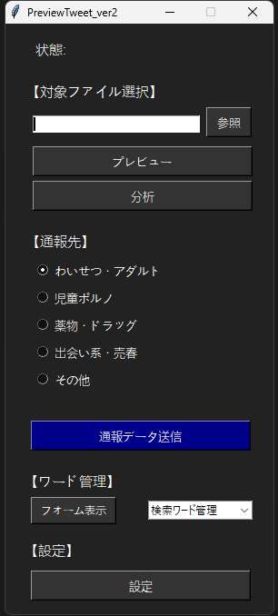
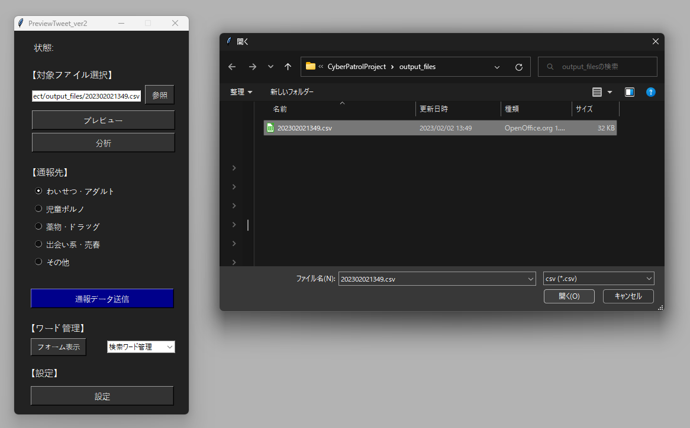
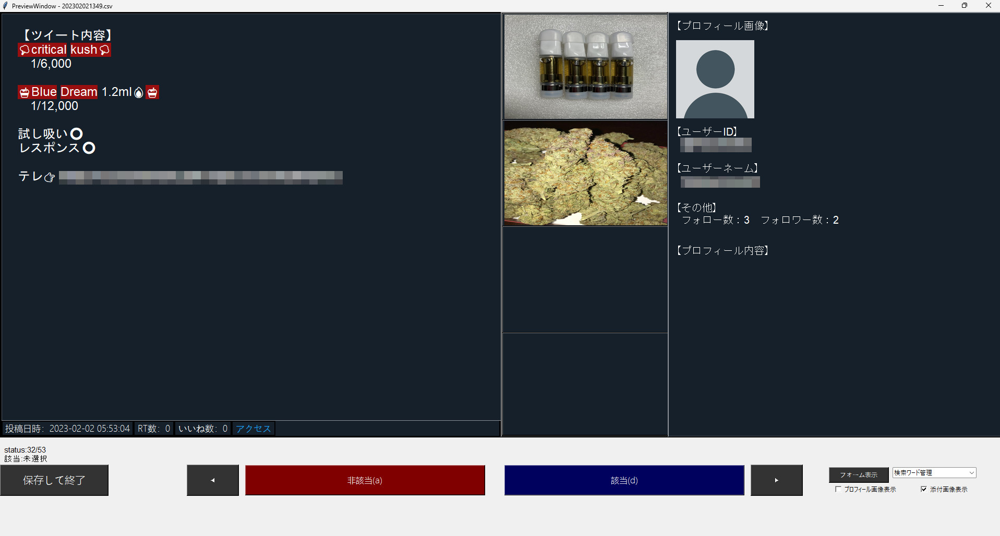

- 
- 
- 
違法情報確認システム
概要
違法情報収集システムにて収集した複数のツイートから1件ずつ「ツイート内容・添付画像・プロフィール情報」を分かりやすく表示し、ワンクリックで有害情報かどうかの選別を行えるシステムです。 また、分析を行うことができツイートに多く含まれるワードや画像が添付されているツイートの割合などを一目で確認することができます。 そして確認を終えたら、インターネットホットラインセンターが指定した通報先を指定し、通報データ送信ボタンを押すとGoogleDriveへアップロードされます。
制作期間
2022年6月～2022年6月
プロジェクトチーム人数
1人
開発環境
- Pycharm
- Windows11
- GitHub
使用言語
- Python
使用API
- GoogleDriveAPI
こだわり
有害情報の可能性のあるツイートを表示する際に、有害情報で多用されるワードが含まれていた場合、そのワード部分が赤くマーカーされる機能を付けることで必要な情報を素早くユーザーに見せることができます。
苦労したこと
GUIの構築にTkinterを使用したのですが、ウィジェットのサイズを指定して作成した為、開発で使用したディスプレイと異なるディスプレイで表示したときに可変的にウィジェットのサイズを変える方法に悩みました。
身についたこと
主にPythonライブラリのPandasやTkinter、matplotlibの実践的な知識を身につけることができました。